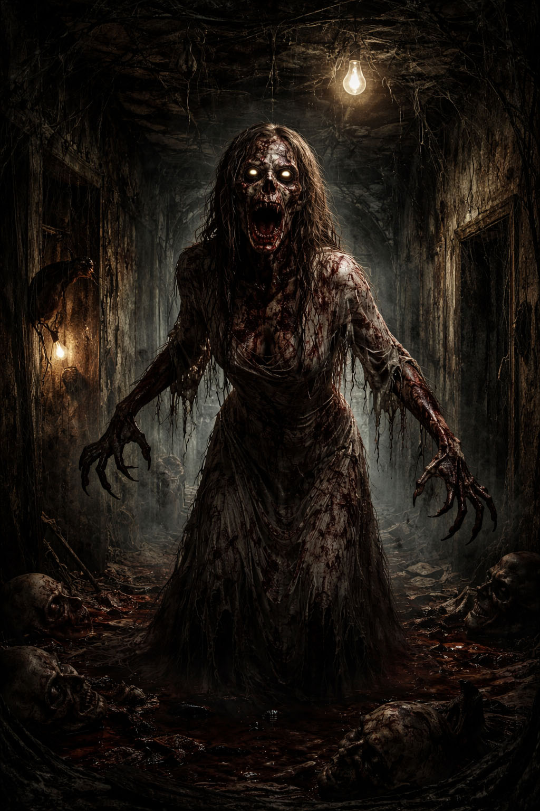

Ti avevo avvertito.
Sei finito nella pagina del Demone del Dark Web.
Ti tormenterà nei sogni facendoti desiderare prodotti che non potrai permetterti.
Renderà un inferno la tua permanenza su internet.
I tuoi dati saranno sempre controllati.
I banner sempre più invasivi.
Le pubblicità così aggressive da farti pentire di aver aperto una pagina.
Il tuo indirizzo email verrà condiviso con chiunque.
Anche con il più misero venditore di corsi online.
Sapranno tutto di te.
Anche quante volte vai in bagno.
Prima ti consiglieranno un lassativo.
Poi la carta igienica più cara.
Non c’è modo di scappare.
Se non trovando il Sacro Graal del sito:
l’Easter Egg nascosto.
L’unico in grado di spezzare la maledizione.